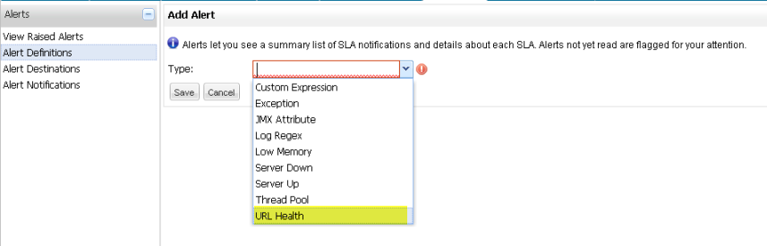

Adding and Managing Alerts and SLAs
This topic gets you started with working with alerts. It shows you how to add a new alert, then view and manage alerts. Since this topic takes you through only one scenario, you should also see Working with Alerts for complete information on SLAs and alerts.
Alerts let you set up the console to check for potential problems on your servers, or for situations that might later lead to server problems. You define conditions (referred to as SLAs) through the Alerts pane. These conditions may later trigger the console to display alert messages that warn or advise you about problem situations.
Add a New Alert
Here are the steps to add a new alert:
-
First click the Alerts tab, then click Alerts Definition in the navigation bar on the left. Click the New Alert button. (These are circled in the figure below.)
-
Select the type of alert you want to add from the pull-down list. For example, select URL Health as shown below.
 -
Specify the parameters for this type of alert. After you specify the type of alert, the Add Alert dialog prompts you for the parameters for that type of alert. For URL Health alerts, you provide a name for the alert, a description, select a severity level, check the Active box, indicate the URL of the external site, the expected status code that would raise the alert, and the wait period (in seconds). Once all parameters are specified, click Save. In this example, the URL is http://www.google.com and the expected status code is 200.
View Raised Alerts
After you save the new alert, the console tracks if conditions meet the alert parameters. If so, the console raises an alert (you may see a pop-up message indicating that a particular alert was raised). To draw your attention to these alerts, at the top of every screen the console posts a flag indicating that there are some number of unread alerts and the number of new alerts (circled in the figure below).
Click View Raised Alerts in the Alerts screen navigation bar to view raised alerts. (See the figure below.)
The View Alerts screen displays a table summarizing the raised alerts. Unread alerts appear in bold to distinguish them from alerts you’ve already read. Click an alert to read the alert details.
Once you’ve read an alert, the console marks it as read. You can also check the box to the left of an alert, then click the Mark as Read button.
View Alerts on the Dashboard
You can also see raised alerts from the Dashboard. Click the Dashboard tab and you should see something similar to the figure below:
Manage Alerts
Alerts must have a status of Active to be raised by the console. By default, a new alert you create is Active. (The Active box is checked by default in the New Alert screen.)
You can set or change the alert status at any time.
Click Alert Definitions in the navigation bar, then check the alert (or alerts) whose status you want to change. Next, click the Control button and select either Activate or Disable.
Set Up Alert Destinations
When an alert is raised, the console can notify you via email or SNMP in addition to the Alerts screen. To receive an alert email or SNMP notification, you first set up the email destination, then the notification conditions.
Click Alert Destinations from the navigation bar on the Alerts screen, then enter a name for the alert destination and select the type of notification, either Email or SNMP.

Next, complete the remaining fields, as shown below. For Google mail (gmail) you specify the SMTP server as smtp.googlemail.com and the SMTP port as 465. Leave the Secured box checked, and check the Use TSL/SSL box. Click Save when finished.

Set Up Alert Notifications
Once the destination is set up, you can set up the notification conditions.
Click Alert Notifications in the left navigation bar, then the New Notification button,
Enter a name to identify the notification. You can specify a filter, if desired, so that only certain alerts are sent to the destination. If you do not define a filter, all alerts are sent to the destination. Then, select a destination from the pull-down list. The list is populated with existing destinations.
Complete the rest of the notification fields:
-
The email "to" address
-
The email "from" address
-
The subject for the email
-
Any message to include in the email body
When complete, click the Save button at the bottom.
Now let’s look at how to add a filter to the notification. (If you did not add a filter when you created the notification, you can always go back and do so by editing the notification.) Click the Add button next to Filter to open the Filter definition display. Using the pull-down lists, select the filter Field and then a value for that field.
For example, the figure below sets the filter field to Alert. The Value pull-down list shows all defined alerts and we select URLHealthAlert. Be sure to click Save to add this filter. Click Add to add additional filters to the notification, followed by Save to save each filter. Keep in mind that with multiple filters, all filter conditions must be true for the notification to be sent.
If you change your mind and want to remove a filter, simply click the red X to the right of the filter.